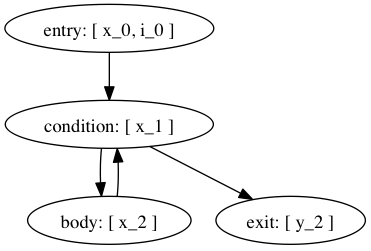

Development crash course¶
This document describes a short crash-course for numba development, where things are and where we want them at.
Overview¶
We start with a Python AST, compiled from source code or decompiled from bytecode using meta. We run a series of stages that transform the program as an AST to something from which we can generate code. The pipeline and environment are central pieces in this story:
https://github.com/numba/numba/blob/devel/numba/pipeline.py
The pipeline has a series of functions that mostly dispatch to the actual transformations or visitors.
https://github.com/numba/numba/blob/devel/numba/environment.py
The environment defines the pipeline order. Noteworthy is :py-class:`numba.environment.FunctionEnvironment`
Stages¶
The main stages are:
Control flow analysis: numba/control_flow
This builds a Control Flow Graph from the AST and computes the SSA graph for the variable definitions. In this representation, each variable assignment is a definition, e.g.:
x = 0 # definition 1 x = "hello" # definition 2Assignments and variable references are recorded as abstract statements in the basic blocks of the CFG, such as
- numba.control_flow.cfstats.NameAssignment
- numba.control_flow.cfstats.NameReference
- numba.control_flow.cfstats.PhiNode
The phi node occurs at control flow joint points, e.g. after an if-statement, or in the condition block of a loop with a loop-carried dependency for a variable:
if c: x = 0 else: x = 2 # phi hereand:
x = 0 for i in range(N): # phi in condition block: x_1 = phi(x_0, x_2) x = x + i # loop-carried dependencyThe phi nodes are themselves variable definitions, and they define the points where variables merge and need a unifyable type (e.g. (int, int), or (int, float), as opposed to (int, string)).
Type inference: numba.type_inference
Infer types of all expressions, and fix the types of all local variables. This operates in two stages:
Infer types for all local variable definitions (including phis)
For an overview of this see Type Dependence Graph Construction below.
Now that all variable definitions have a type, we can easily infer types for all expressions by propagating type information up the tree
When the type inferencer cannot determine a type, such as when itcalls a Python function or method that is not a Numba function, itassumes type object. Object variables may be coerced to and frommost native types.The type inferencer and other code insert CoercionNode nodes thatperform such coercions, as well as coercions between promotablenative types.It also resolves the return type of many math functions calledin the numpy, math and cmath modules.Each AST expression node has a Variable that holds the type ofthe expression, as well as any meta-data such as constant valuesthat have been determined.To see how builtins, math and numpy callables are handled, havea read through Adding Type Inference for External Code in the user documentation,as well as numba.type_inference.modules::This above sub-package is an important part of numba thatinfers (and sometimes grossly rewrites) calls to known functions.Specialization/Lowering: numba/specialize and numba/transforms.py
What follows over the typed code are a series of transformations to lower the level of the code into something low-level - something amenable to code generation:
Rewrite loops over range or xrange into a while loop with a counter
Rewrite iteration over arrays to a loop over range with an index into the array
Lower object conversions into calls into the Python C-API. For instance it resolves coercions to and from object into calls such as PyFloat_FromDouble, with a fallback to Py_BuildValue/PyArg_ParseTuple.
Lower exception code into calls into the C-API and insert NULL pointer checks in places
Normalize comparisons (e.g. a < b < c => a < b and b < c)
Keep track of refcounts. This is mostly done with ObjectTempNode, which hold a temporary for an object (a new reference). These temporaries are decreffed at cleanup:
define double @func() { entry: %retval = alloca double ; return value %tmp = alloca object ; object temporary ... %obj = call PyObject_SomeNewObject() %have_error = cmp obj NULL ; check return value cbranch %have_error, label %error, label %success success: ; no error do something interesting with %obj store %something %retval ; return some value br return_block ; ok, we're done error: ; some error occurred :( store NaN retval br cleanup return_block: ; clean up objects call void Py_XDECREF(%0) %result = load %retval ret %result ; return result }Code generation: numba/codegen
Generate LLVM code from the transformed AST. This is relatively straightforward at this point. One tricky problem is that the basic blocks from the LLVM code no longer correspond to the basic blocks of the CFG, since error checks have been inserted. This makes tracking phis harder than it should be.
The code generator uses utility functions from numba/utility and numba/external to do things like refcounting (Py_INCREF, etc) and uses helpers to slice and broadcast arrays.
Package Structure¶
numba/type_inference
Type inference
numba/typesystem
Numba typesystem, see also types
numba/specialize
Lowering transformations, along with numba/transforms.py . Coercions are in numba/transforms.py
numba/nodes
Contains AST nodes. Some nodes that need some explaining:
ObjectTempNode:
Holds a PyObject * temporary that it manages a refcount for
CloneNode/CloneableNode:
These nodes are used for subtree sharing, to avoid re-evaluation of the subtree. Consider e.g. the expression ‘x * 2’, which we want to refer to twice, but evaluate once. We can do the following:
cloneable = CloneableNode(<x * 2 expression>) clone = CloneNode(cloneable)
Here cloneable must be evaluated before clone. We can now generate as many clones as we want without re-evaluating x * 2
numba/exttypes
Numba extension types, have a read through extclasses first. These are fairly well documented. To see how they work, see below Extension Classes
numba/closures
Implements closures for numba. See Closures and closureimpl below for how they work.
numba/support
Ctypes, CFFI and NumPy support (slicing, etc)
numba/array_expressions.py
Implements array expressions using minivect. Since we don’t actually use the tiling specializers or desperately need crazy optimizations for special cases, we should really use lair’s loop_nest instead and throw away numba/minivect
numba/vectorize
The @vectorize functionality to build (generalized) ufuncs
numba/wrapping
Entry points to compile numba functions, classes and methods
numba/utility and numba/external
Runtime support utilities. And yes, you make a valid point, this should really be one package.
numba/intrinsic
Intrinsics and instruction support for numba, as well as... internal intrinsics. Merge internal stuff in numba/external :)
See intrinsics for what intrinsics do.
numba/containers
Numba typed containers, see containers
numba/asdl and numba/ir
Utilities to validate ASTs and generate fast visitors/AST implementations from ASDL. This should be factored out into asdlpy or somesuch.
numba/viz
Format ASTs and CFGs with graphviz. See also the ‘annotate’ branch
numba/minivect
Array expression compiler. numba.array_expressions is the only remaining module depending on this. However, since none of the optimizations are actually used, it doens’t make sense to keep this. Instead we can use the loop_nest function from the lair project.
More on how the array expressions work: Array Expressions
Type Dependence Graph Construction¶
From the SSA graph we compute a type graph by inferring all variable assignments. This graph often has cycles, due to the back-edge in the CFG for loops. For instance we may have the following code:
x = 0
for i in range(10):
x = f(x)
y = x
Where f is an external autojit function (i.e., it’s output type depends on it’s dynamic input type).
We get the following type graph:

Below we show the correspondence of the SSA variable definitions to their basic blocks:

Our goal is to resolve this type graph in topological order, such that we know the type for each variable definition (x_0, x_1, etc).
In order to do a topological sort, we compute the condensation graph by finding the strongly connected components and condensing them into single graph nodes. The resulting graph looks like this:

And SCC0 contains the cycle in the type graph. We now have a well-defined preorder for which we can process each node in topological order on the transpose graph, doing the following:
- If the node represents a concrete type, propagate result along edge
- If the node represents a function over an argument of the given input types, infer the result type of this function
- For each SCC, process all internal nodes using fixpoint iteration given all input types to the SCC. Update internal nodes with their result types.
Closures¶
numba/closures.py provides support for closures and inner functions:
@autojit
def outer():
a = 10 # this is a cellvar
@jit('void()')
def inner():
print a # this is a freevar
inner()
a = 12
return inner
The ‘inner’ function closes over the outer scope. Each function with cellvars packs them into a heap-allocated structure, the closure scope.
The closure scope is passed into ‘inner’ when called from within outer.
The execution of def creates a NumbaFunction, which has itself as the m_self attribute. So when ‘inner’ is invoked from Python, the numba wrapper function gets called with NumbaFunction object and the args tuple. The closure scope is then set in NumbaFunction.func_closure.
The closure scope is an extension type with the cellvars as attributes. Closure scopes are chained together, since multiple inner scopes may need to share a single outer scope. E.g.:
def outer(a):
def inner(b):
def inner_inner():
print a, b
return inner_inner
return inner(1), inner(2)
We have three live closure scopes here:
scope_outer = { 'a': a } # call to 'outer'
scope_inner_1 = { 'scope_outer': scope_outer, 'b': 1 } # call to 'inner' with b=1
scope_inner_2 = { 'scope_outer': scope_outer, 'b': 2 } # call to 'inner' with b=2
Function ‘inner_inner’ defines no new scope, since it contains no cellvars. But it does contain a freevar from scope_outer and scope_inner, so it gets scope_inner passed as first argument. scope_inner has a reference to scope outer, so all variables can be resolved.
These scopes are instances of dynamic numba extension classes.
Extension Classes¶
Extension classes live in numba/exttypes.
@jit¶
Compiling @jit extension classes works as follows:
Create an extension Numba type holding a symbol table
Capture attribute types in the symtab ...
... from the class attributes:
@jit class Foo(object): attr = double... from __init__:
@jit class Foo(object): def __init__(self, attr): self.attr = double(attr)Type infer all methods
Compile all extension methods
- Process signatures such as @void(double)
- Infer native attributes through type inference on __init__
- Path the extension type with a native attributes struct
- Infer types for all other methods
- Update the ext_type with a vtab type
- Compile all methods
Create descriptors that wrap the native attributes
Create an extension type:
- {
PyObject_HEAD ... virtual function table (func **) native attributes
}
The virtual function table (vtab) is a ctypes structure set as attribute of the extension types. Objects have a direct pointer for efficiency.
@autojit¶
Compiling @autojit extension classes works as follows:
Create an extension Numba type holding a symtab
Capture attribute types in the symtab in the same was as @jit
Build attribute hash-based vtable, hashing on (attr_name, attr_type).
(attr_name, attr_type) is the only allowed key for that attribute (i.e. this is fixed at compile time (for now). This means consumers will always know the attribute type (and don’t need to specialize on different attribute types).
However, using a hash-based attribute table allows easy implementation of multiple inheritance (virtual inheritance), without complicated C++ dynamic offsets to base objects (see also virtual.py).
- For all methods M with static input types:
- Compile M
- Register M in a list of compiled methods
Build initial hash-based virtual method table from compiled methods
- Create pre-hash values for the signatures
- We use these values to look up methods at runtime
Parametrize the virtual method table to build a final hash function:
slot_index = (((prehash >> table.r) & self.table.m_f) ^ self.displacements[prehash & self.table.m_g])Note that for @jit classes, we do not support multiple inheritance with incompatible base objects. We could use a dynamic offset to base classes, and adjust object pointers for method calls, like in C++:
However, this is quite complicated, and still doesn’t allow dynamic extension for autojit classes. Instead we will use Dag Sverre Seljebotn’s hash-based virtual method tables:
The following paper helps understand the perfect hashing scheme:
Hash and Displace: Efficient Evaluation of Minimal Perfect Hash Functions (1999) by Rasmus Pagn:
Create descriptors that wrap the native attributes
Create an extension type:
{ hash-based virtual method table (PyCustomSlots_Table **) PyGC_HEAD PyObject_HEAD ... native attributes }We precede the object with the table to make this work in a more generic scheme, e.g. where a caller is dealing with an unknown object, and we quickly want to see whether it support such a perfect-hashing virtual method table:
- NOTE: What we want is to actually use a separate attribute table
in addition to the virtual method table, giving all extension objects a compatible layout.
if (o->ob_type->tp_flags & NATIVELY_CALLABLE_TABLE) { PyCustomSlots_Table ***slot_p = ((char *) o) - sizeof(PyGC_HEAD) PyCustomSlots_Table *vtab = **slot_p look up function } else { PyObject_Call(...) }We need to store a PyCustomSlots_Table ** in the object to allow the producer of the table to replace the table with a new table for all live objects (e.g. by adding a specialization for an autojit method).
Wrappers¶
There are several wrappers in numba that wrap functions, classes and methods. The key implementations are in:
- numba/numbawrapper.pyx
- numba/numbafunction.c
- numba/codegen/llvmwrapper.py
What numba does is it creates a function like this (in C pseudo-code):
double square(double arg) {
return arg * arg;
}
and it wraps it as follows:
PyObject *square_wrapper(PyObject *self, PyObject *args) {
double arg;
if (!PyArg_ParseTuple(args, "d", &arg))
return NULL;
return PyFloat_FromDouble(square(arg));
}
The wrapper is a CPython compatible function the likes of which you often see in extension modules. It is created by llvmwrapper.py. This wrapper is turned into an PyCFunctionObject, defined in Include/methodobject.h in CPython’s source tree:
typedef struct {
PyObject_HEAD
PyMethodDef *m_ml; /* Description of the C function to call */
PyObject *m_self; /* Passed as 'self' arg to the C func, can be NULL */
PyObject *m_module; /* The __module__ attribute, can be anything */
} PyCFunctionObject;
Numba uses a wrapper (a subclass) of PyCFunctionObject, called numbafunction, which has some extra fields and gives the function a more pythonic interface, such as a dict, a way to override __doc__, etc. It also has a field to hold a closure frame (see Closures).
This function object is created after compilation of the function and its wrapper (square_wrapper). It is instantiated in llvmwrapper.py:numbafunction_new, calling NumbaFunction_NewEx.
@jit¶
Jit functions are wrapped typically by the NumbaFunction in numbafunction.c. The NumbaCompiledWrapper is only a temporary wrapper used in case of a recursive function that is still being compiled, and for which we have no pointer.
@autojit¶
Autojit functions are handled by NumbaSpecializingWrapper, which wraps a Python function and when called does a lookup in a cache to see if a previously compiled version is available. This code in in numbawrapper.pyx.
NumbaSpecializingWrapper holds an AutojitCache which tries to find a match very quickly. However, it may not always find a compiled version even though it’s in the cache, for instance because there are values of different Python types which are represented using the same numba type.
This is then corrected by a slower path which tries to compile the function, and creates a type for each argument. It uses these types to do a lookup in numba.functions.FunctionCache.
classes¶
The story for classes is slightly different. @jit classes are simply turned into a compiled extension type, with compiled methods set as class attributes. The NumbaFunction handles binding to bound or unbound methods.
@autojit classes are wrapped in the same way as autojit functions, but with a different compiler entry point that triggers when the wrapper is called. The entry point compiles a special version of the extension class, and any methods that are not specialized (e.g. because they take further arguments than self), are wrapped by wrappers (again NumbaSpecializingWrapper) that compile a method on call and update the method table (the table supporting fast call from numba space).
The only special case are unbound methods, consider the code below:
from numba import *
@autojit
class A(object):
def __init__(self, arg):
self.arg = arg
def add(self, other):
return self.arg * other
print A(10).exttype # <AutojitExtension A({'arg': int})>
print A(10.0).exttype # <AutojitExtension A({'arg': float64})>
We have two versions of our extension type, one with arg = int and one with arg = float64. Now consider calling add as an unbound method:
print A.add(A(10.0), 5.0) # 50.0
To dispatch from unbound method A.add of unspecialized class A to specialized method A[{'arg':int_}].add, numba creates a UnboundDelegatingMethod defined in numba.exttypes.autojitclass.
Array Expressions¶
Array expressions live in numba.array_expressions. Array expressions roughly work as follows:
Detect array expressions (ArrayExpressionRewrite)
This code finds a maximal sub-expression that operates on arrays, e.g. A + B * C. These expressions are captured via register_array_expression.
The registered expression is extracted using get_py_ufunc_ast. This function traverses the subexpression and does the following:
- demote types from arrays to scalars
- register any non-array sub-expression of our expression as an operand. More on this below.
Compile the extracted sub-expression as a seprate function
Generate a loop nest using minivect that calls this compiled function
Let’s walk through an example, consider for argument’s sake the following expression:
A + sin(B) * g(x)
Where g(x) returns a scalar and is not part of the array expression. Our AST looks like this:

We take this expression and build a function with g(x) as operand:
def kernel(op0, op1, op2):
return op0 + sin(op1) * op2
Each operation acts on scalars. Note that the g(x) is not part of the kernel. We now use minivect to generate a loop nest, e.g. for 2D arrays:
def loop_nest(shape, result, A, B, g_of_x):
for i in range(shape[0]):
for j in range(shape[1]):
result[i, j] = kernel(A[i, j], B[i, j], g_of_x)
Result is allocated, or in cases of slice assignment it is the LHS:
LHS[:, :] = A + sin(B) * g(x)
The passed in shape is the broadcasted result of the shapes of A and B:
shape = broadcast(A.shape, B.shape)
result = np.empty(shape)
loop_nest(shape, result, A, B, g(x))
Testing¶
Whenever you make changes to the code, you should see what impact this has on by running the test suite:
$ python runtests.py # run whole test suite
$ python runtests.py mypackage # run tests under mypackage
$ python runtests.py mypkg.mymod # run test(s) matched by mypkg.mymod
The test runner matches by substring, i.e.:
$ python runtests.py conv
Running tests in /home/mark/numba/numba/numba
numba.tests.test_object_conversion SUCCESS
numba.typesystem.tests.test_conversion SUCCESS
To isolate problems it’s best to create an isolated test-case that is as small as possible yet still exhibits the problem, often using just a simple test script.
Debugging compiler tracebacks can be handled through prints, but if the problem is less obvious (or the codebase unfamiliar) it is often simpler to use post-mortem debugging, which can help understand what’s going wrong without modifying any code (and later tracking down print statements that you accidentally committed):
$ python -m pdb test.py
When using post-mortem debugging it’s useful to enable the post-mortem option in numba.environment.FunctionErrorEnvironment:
enable_post_mortem = TypedProperty(
bool,
"Enable post-mortem debugging for the Numba compiler",
False
)
Set the default value to True there. This way exceptions are not swallowed and accumulated (and hence raised from the error reporter, instead of the failing place in the compiler).
Debugging¶
Depending on the nature of the problem, there are some tools available for debugging what’s going on. In the annotate branch there is functionality to debug pretty-print to the terminal, create a graphviz visualization or generate a webpage:
usage: numba [-h] [--annotate] [--dump-llvm] [--dump-optimized] [--dump-cfg]
[--dump-ast] [--fancy]
filename
positional arguments:
filename Python source filename
optional arguments:
-h, --help show this help message and exit
--annotate Annotate source
--dump-llvm Print generated llvm assembly
--dump-optimized Dump the optimized llvm assembly
--dump-cfg Dump the control flow graph
--dump-ast Dump the AST
--fancy Try to output fancy files (.dot or .html)
The --annotate feature also prints the types of each variable used in a certain expression.
Debugging ASTs¶
You get more control over when the AST is dumped by adding the dump_ast stage in numba.environment at the right place in the pipeline. If you just quickly want to debug print an AST from Python, there is:
- ast.dump(mynode)
- utils.pformat_ast or utils.dump
It can also help sometimes to look at an instance of the data of certain piece of code is dealing with interactively, to try and make sense of what is happening. You can do this with a breakpoint using your favorite Python debugger, e.g. import pdb; pdb.set_trace().
Debugging Types¶
Debugging types can be tricky, but something that is often valuable is numba.typeof:
@jit(...)
def myfunc(...):
...
print(numba.typeof(x))
print(numba.typeof(x + y))
You can also always force types through casts or locals:
@jit(..., locals={'x':double}) # locals
def myfunc(...):
print(double(y)) # cast
Debugging the Translator¶
To debug the translator, one can again stick with prints or post-mortem debugging. If the latter option is desirable, make absolutely sure that you enable the post-mortem debug option (see post-mortem). This makes sure numba does not delete the LLVM function, which means the LLVM values referenced in the translator will still be in a consistent state.
Problems¶
There are several problems with the codebase, stemming from our IR. The AST is too high level for most of the operations that we need to do, and has too much information, which leads to code having to deal with different in-memory formats that are doing similar things - which should be encoded in a uniform way. Consider e.g. the following code:
x = range(N)
for i in x:
...
# And
for i in range(N):
...
The code that detects and transforms iteration over range should be written in a uniform way, depending on the flow of values irregardless of the syntax. Besides the level of information ASTs are not always amenable to transformations, e.g. when you want to execute some statements in the middle of an expression, or when you want to share a subtree (see the Clone(able)Node discussion above nodes).
Another issue is that refcounting and the Python C-API as well as NumPy are baked into the transformations. Coupling these APIs like this can be a real problem when you want to switch to a different runtime environment or library (CPython, NumPy).